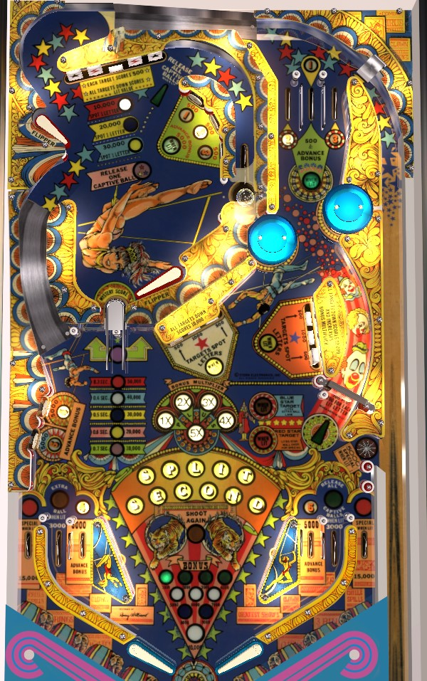

Completing the upper playfield 5-bank of targets or the left and right targets in whichever lower 3-bank is lit adds letters in Split Second. When lit, the right spinner's value increases the more letters have been collected. High value lit spinners and fast shots around the u-turn in the lower left are the best repeatable sources of points. To play multiball, lock balls at the upper playfield's upper right lane, then qualify release at the lock lane or far right in lane by spelling Split Second in full or making a fast u-turn shot.
Split Second letters are earned by completing specific drop targets.
Each target down in the upper playfield 5-bank scores 500 points. Completing the bank adds 1 Split Second letter and resets the bank, as well as scoring 10,000 points the first time, 20,000 the second time, and 30,000 thereafter.
Bumpers and slingshots alternate which of the two 3-banks of drop targets is lit. The left and right targets of the lit 3-bank each spot one Split Second letter when knocked down.
Split Second letters are carried from ball to ball.
When the lower right spinner is lit (alternating on slingshot hits only), it scores 300 points plus 200 per lit Split Second letter per spin, for a maximum of 2,500 points per spin. If the spinner is not lit, it scores 300 per spin only.
Collecting all of the letters in Split Second will light the upper playfield lock lane and the far right in lane for Release All Captive Balls if and only if there are currently 2 balls in the lock.
1, 2, and 3 are collected from top lanes that can either be accessed via a short plunge or from below by shooting from the lower left flipper up between the pop bumpers. 4 and 5 are collected on the near in lanes. The 1, 2, and 3 top lanes score 500 points and a bonus advance, or 5,000 and a bonus advance when lit green; these lanes are lit green for the rest of the game after each of 1, 2, and 3 have been collected on the same ball. The 4 and 5 lanes always score 5,000 points and a bonus advance. 1-2-3-4-5 numbers can also be collected from various standup targets: 1-2-3 are on the upper playfield, and 4-5 are in the lower left of the main playfield. Collecting 1-2-3-4-5 all on the same ball after having spelled Split Second in full lights a Special, which alternates between the two out lanes each time a slingshot or bumper is hit.
In the middle-left of the main playfield and going underneath the upper playfield is the u-turn. When the ball enters either side of the u-turn, the game tracks how much time passes before the ball comes out the other side. The faster this happens, the better the reward: 10,000 points for 0.7 seconds or less, 20,000 points for 0.6 seconds or less, etc., down to 50,000 points for 0,3 seconds or less. Collecting 40,000 or 50,000 points from the u-turn while there are two balls locked also lights the far right in lane for Release All Captive Balls.
Balls can be locked at any time in the upper right lane of the upper playfield. Locking a ball when there are not already 2 balls in the lock scores 10,000 points and serves a new ball to the plunger lane. If 2 balls were already locked, you get no points and one ball is kicked out of the lock. There are 3 ways to release balls from the lock and start multiball.
When a ball is kicked out using any of the three methods, it scores 2,000 points times the number of currently lit Split Second letters. Balls in the lock are never kicked out on their own; they are preserved from ball to ball, player to player, and game to game, so lock stealing is always in play. There are no multiball-specific scoring features. Balls can be relocked during multiball, which effectively removes them from play.
The outer target in each bank scores 500 points, and the center target scores 1,000. Completing either 3-bank of drop targets resets that bank, scores 10,000 points, and increases the bonus multiplier by 1x up to the maximum of 15x.
Slingshots and bumpers alternate which of the two banks are lit. If a bank is lit, the two outer drop targets on that bank spot letters in Split Second. If a bank is lit and only the center target in that bank is standing, that target has additional value: the red star target in the center bank lights the star rollover in the free-ball lane for a Special, and the blue star target in the right bank lights the far left in lane for extra ball.
Just above the right out lane is a free-ball lane that scores 5,000 points, and can be lit for Special using the red star drop target as described above. This free-ball lane puts the ball back into the shooter lane where it must be manually replunged. The free-ball lane is very difficult if not impossible to shoot directly, and balls most often end up here off the left slingshot. If playing Split Second in a tournament, verify in advance whether it is required or not to immediately plunge a ball that ends up in the free-ball lane during multiball.
Split Second has a conventional in/out lane setup, but with two in lanes on each side instead of one. Out lanes score 15,000 points and are lit alternately for Special after lighting 1-2-3-4-5 and spelling Split Second. Far in lanes score 3,000 points and can be lit for extra ball (left) or release all captive balls (right). Near in lanes score 5,000 points and a bonus advance as well as the numbers 4 (left) and 5 (right) in the 1-2-3-4-5 sequence.
Any 1-2-3-4-5 lane or standup target advances the bonus by 1,000 points. Max base bonus is 10,000 points. Each completion of either 3-bank of drop targets increases the bonus multiplier by 1x. Max bonus multiplier is 15x, for a total max bonus of 15x 10,000 = 150,000 points. Bonus multiplier is always held from ball to ball, but base bonus never is. There is no mid-ball bonus collect.
Special can score nothing, 100,000 points, an extra ball, or a free game. Special can also be set to 1 per ball or 1 per game, per player. The maximum number of extra balls held in memory at once is either 3 or 5 (adjustable). Extra ball can only be enabled or disabled; it cannot score a point value.
There can supposedly be a bonus ball feature provided to players who drain their final ball of the game without playing any multiball, but with Release All Captive Balls lit. I have never been able to get this to happen, so I do not know how it works.
The Split Second 1-2-3-4-5 out lane special can be lit in both out lanes at once rather than alternating between the two on slingshot and bumper hits.